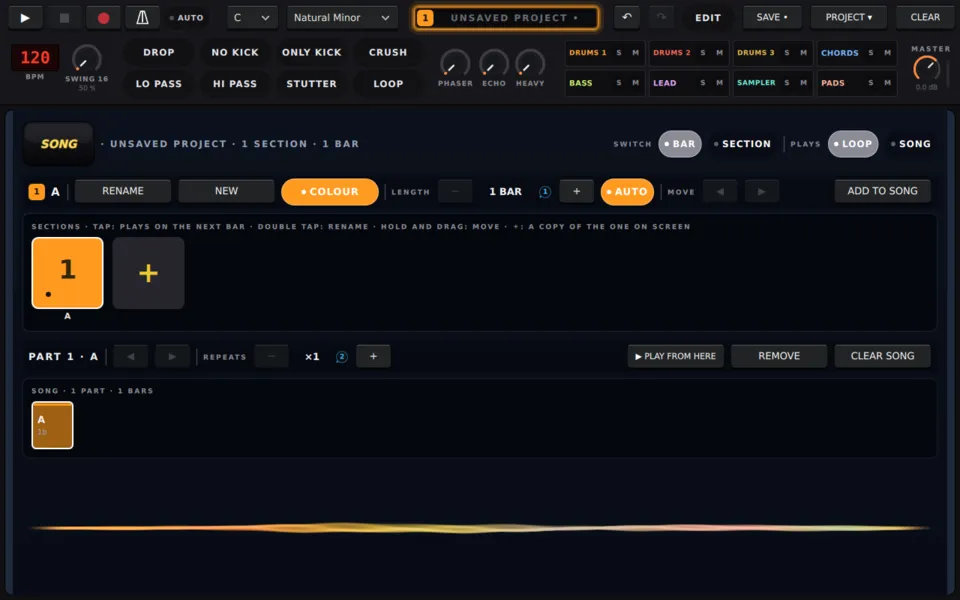
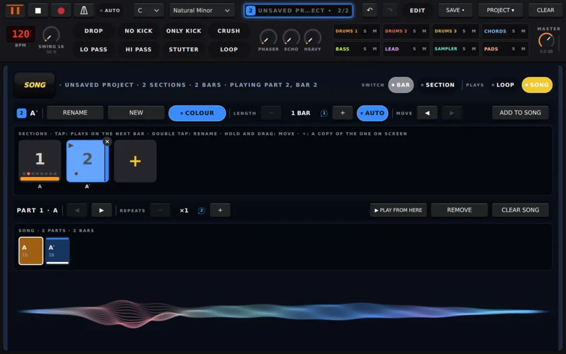

ravving を使う / guide/loop-to-song.md
ループを曲にする
セクションをコピーして変え、パートを順に再生する。セクションと SONG ページを数ステップで。
ループは出発点。曲にはパートが必要です：イントロ、ヴァース、ドロップ。ravving では各パートがセクションで、曲はそれを鳴らす順番です。
SONG ページを開く
どのページからでも ALT + 1 を押します。もう一度押すと元の場所に戻ります。
今のループはセクション 1（名前は A）です。新しいプロジェクトの曲には、すでに最初のパートとして入っています。

2 つ目のパートを作る
- ＋ をタップすると、表示中のセクションがコピーされます：A から A′ ができます。
- コピーが表示中のセクションになり、曲の最後に加わります。
- ALT + 1 を押して楽器のページに戻り、何か変えます。スネアやベースラインを足したり、キックを抜いたり。
編集は表示中のセクションにだけ入るので、A はそのままです。空のセクションにするには ＋ の代わりに NEW をタップします。
曲を再生する
- ALT + 1 を押して、もう一度 SONG ページを開きます。
- 右上の SONG をタップすると、PLAY で曲を最初から最後まで再生します。LOOP は表示中のセクションだけを再生します。
- PLAY を押します。
ページには再生中のパートと小節が、プレートにはパートが「2/2」のように表示されます。曲は最後で止まります。

形を整える
- 繰り返し：曲のブロックを選び、+ と −、またはノブ 2 で ×1〜×16 に設定します。
- 順番：ブロックを選び、ALT + ◀ ▶ で動かします。
- 長さ：セクションは一番長いパターンの長さになります。LENGTH で 1〜8 小節に固定できます。
- 名前と色：セクションをダブルタップすると名前を変えられます。COLOUR で色を変えます。
▶ PLAY FROM HERE で、選んだブロックから曲を再生します。
演奏中に手で切り替える
LOOP のときは、音楽の再生中にセクションを選ぶと、次の小節線でぴったり切り替わります：
- SONG ページでそのキーをタップする、
- または、どのページからでも ALT + ステップキー 9〜16 でセクション 1〜8 を選ぶ。
録音する
PROJECT ▾ → EXPORT → WHAT: SONG で曲全体を一度に録音します。
もっと
- セクションと曲：セクションの予約、BAR か SECTION での切り替え、マシンごとの LOOP と ONCE。